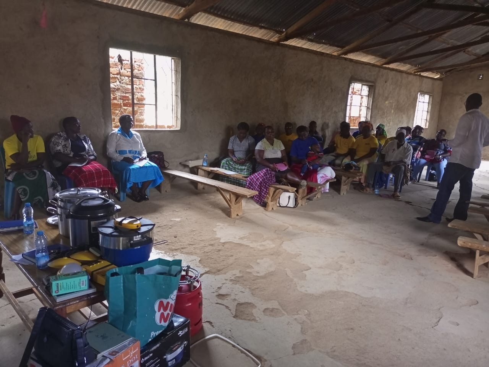

Economics & Education
Learning to understand systems, opportunities and people, then turning knowledge into practical support.
ABOUT ME
People, learning, purpose and meaningful community impact are at the heart of my work.

BEYOND MY WORK
I am Nanjala an economist, educator, mentor, trainer, community volunteer and lifelong learner. I am passionate about empowering people to build sustainable livelihoods, develop their potential and create meaningful change in their communities.
My experiences in economics and education, community development, mentorship, training and service continue to shape how I listen, learn, facilitate and work with people.
MORE THAN MY JOURNEY OF PURPOSE
Learning to understand systems, opportunities and people, then turning knowledge into practical support.
Community work has taught me the importance of listening, participation and learning alongside people.
I value work that continues to matter beyond a programme, a workplace or a single activity.
VALUES THAT SHAPE MY WORK
Listening to people, understanding different experiences and creating space for dignity.
Staying curious, asking questions and allowing every experience to teach me something.
Believing that meaningful progress is stronger when people participate and grow together.
Thinking beyond immediate results and supporting solutions that can continue to create value.
VOLUNTEERING & SERVICE
The things I enjoy also shape how I learn, connect, reflect and serve.


